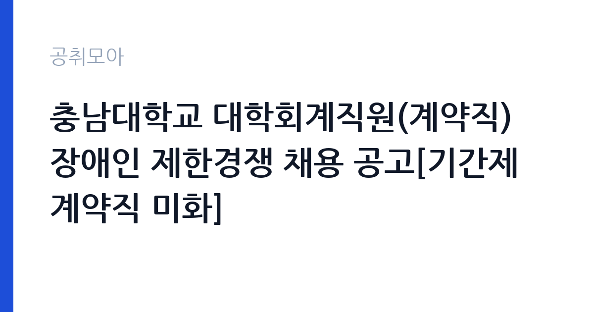

[국가기관] 충남대학교 대학회계직원(계약직) 장애인 제한경쟁 채용 공고[기간제계약직 미화]
충남대학교 · 대전 · 마감 2026-11-06 (D-10) · 출처 나라일터

한눈에 보는 모집 조건
| 기관 | 충남대학교 |
|---|---|
| 공고명 | 충남대학교 대학회계직원(계약직) 장애인 제한경쟁 채용 공고[기간제계약직 미화] |
| 고용형태 | 기간제 |
| 근무지 | 대전 |
| 게시일 | 2026-10-27 |
| 마감일 | 2026-11-06 (D-10) |
지원자격, 이렇게 읽으세요
- 기간제계약직 미화 내부(주30) 3명 기간제계약직 미화 외부(주30) 1
- 접수 ~2026-11-06 마감
- 세부 조건은 원문 공고문 확인
기간제 근로자는 근로계약 기간이 정해진 신분입니다. 계약 기간과 갱신 가능 여부가 근로계약서에 명시되며 기간 만료 시 근로관계가 종료됩니다. 결원 보충이나 특정 사업 기간에 맞춰 채용되는 경우가 많아 업무 범위가 명확합니다. 이번 공고는 충남대학교가 직접 진행하는 자체 전형입니다. 미화 직무는 학력과 경력을 엄격하게 보지 않는 대신, 실제 근무 가능성과 건강 상태를 확인합니다. 무거운 장비를 들고 계단과 화장실을 오가야 하므로 허리와 무릎 상태가 실질적인 조건입니다. 채용 인원이 1명인 경우가 많아 경쟁이 몰릴 수 있고, 근무지 거주자나 관련 경력자를 우대하는 조항이 붙기도 합니다. 접수 방식이 우편이나 방문인 경우가 있어 온라인 접수만 생각하면 일정을 놓칩니다. 국가공무원법상 결격사유 확인 절차가 있습니다. 자격증 유효 기간과 등록 상태를 접수 전에 점검하십시오. 학력이나 전공 요건이 없는 공고라도 제출서류 목록은 그대로 적용되므로 서류 준비 부담은 줄지 않습니다. 공고문의 응시자격 표를 보면 자격 항목이 여러 줄로 나뉘어 있으므로, 각 줄을 하나씩 체크하며 본인 해당 여부를 표시해 두면 누락을 줄일 수 있습니다.
이 공고의 포인트
이 건은 충남대학교가 같은 시기에 낸 5개 모집분야 가운데 시설 미화 직무입니다. 다른 직무 공고와 요건이 다르므로 지원 전에 모집분야 표를 대조해야 합니다. 이 공고의 첫 번째 포인트는 고용 형태입니다. 계약 기간이 정해져 있어 근무 종료 시점이 명확합니다. 그만큼 짧은 기간에 어떤 실적을 남길지가 중요해집니다. 두 번째는 업무 범위가 명확하다는 점입니다. 시설 미화 직무로 채용되므로 배치 이후 담당 업무가 크게 흔들리지 않습니다. 세 번째는 근무지입니다. 대전 지역 근무로 수도권 공고에 비해 지원자 분포가 넓지 않아 상대적으로 경쟁이 분산되는 경우가 있습니다. 재공고로 올라온 공고라 이전 차수 지원자와의 형평성 기준을 확인할 필요가 있습니다. 같은 직무 공고 중에서는 접수 마감이 가장 빨라 일정을 앞당겨 잡아야 합니다. 다만 선발 인원이 3명으로 많지 않아 자격을 갖춘 지원자가 몰리면 경쟁률이 높아질 수 있습니다.
전형은 어떻게 진행되나
채용 절차는 공고문에 안내된 순서대로 진행되며, 서류 접수 마감 후에는 추가 접수나 서류 보완이 이뤄지지 않는 것이 원칙입니다. 서류심사에서는 응시자격과 제출서류의 형식 요건을 기계적으로 확인하므로, 경력 증명서의 기간과 직무 내용이 공고의 요건과 정확히 맞아야 합니다. 면접은 지원자 수에 따라 집단면접과 개별면접으로 나뉘고, 직무 관련 질문과 상황 대응 질문이 함께 나옵니다. 합격자 발표는 개별 통보 또는 홈페이지 게시로 이뤄지며 이후 임용 절차가 진행됩니다. 온라인 접수는 마감 시각이 분 단위로 정해지므로 시스템 시간을 기준으로 판단해야 합니다.
원문에서 확인한 전형 방식
○ 선발직급 : 기간제계약직 미화 내부(주30) 3명, 기간제계약직 미화 외부(주30) 1명 ○ 고용형태 : 기간제 ○ 접수기간 : 2026. 10. 30.(금) ~ 11. 6.(금) 18:00 ○ 응시방법 : 이메일 제출(hv4052@cnu.ac.kr) ○ 문의처 : 042-821-5146
이런 분께 추천해요
- 장기간 성실하게 근무할 수 있는 분
- 신체 활동에 무리가 없는 분
- 출퇴근 시간을 정확히 지킬 수 있는 분
지원 전 체크리스트
- 응시자격 요건과 경력 기준을 충족하는가 — 경력은 증명서로 입증해야 합니다
- 계약 기간과 근무 시작일·종료일을 확인했는가
- 제출서류 목록을 모두 준비했는가 — 누락 시 서류 단계에서 탈락합니다
- 접수 마감 2026-11-06 이전에 접수 방식을 확인해 제출했는가
모집 일정과 제출 타이밍
접수 마감은 2026-11-06이고 공고는 2026-10-27에 게시되었습니다. 준비 기간 10일 안에 서류 작성, 증빙 발급, 접수를 모두 마쳐야 하므로 주말을 포함해 일정을 미리 나누는 것이 좋습니다. 특히 경력 기술서나 직무수행계획서를 요구하는 공고는 작성에 시간이 걸리므로 첫날 초안을 잡으십시오. 서류 합격자 발표와 면접 사이 간격이 짧은 경우가 많아 면접 예상 질문은 서류 제출 전에 정리해 두는 편이 유리합니다. 마감 직전에는 접속이 몰리므로 여유를 두고 제출하십시오. 임용 예정일이 빠르게 잡히는 공고이므로 현재 일정과 겹치지 않는지 미리 확인하십시오.
직무 이해하기: 국가기관
교육기관은 학교 교육과 교원 연수, 교육 행정을 담당합니다. 교육청은 관내 학교를 지원하고, 대학은 학사와 연구, 학생 지원 업무를 운영합니다. 예산과 인사 규정이 교육부 지침과 자체 규정을 함께 따르므로 절차가 엄격합니다. 미화 업무는 건물 내부와 외부의 청결을 유지하는 일입니다. 사무실과 화장실, 복도, 계단을 정해진 순서와 주기로 청소하고, 쓰레기를 분리해 지정된 장소로 옮깁니다. 행사나 회의가 있는 날에는 사전 정리와 사후 청소가 추가됩니다. 바닥 왁싱이나 유리창 청소처럼 장비를 쓰는 작업도 포함되며, 세제와 소독제 사용법을 지켜야 합니다. 근무 시간이 이른 아침이나 저녁으로 정해지는 경우가 많습니다. 업무 기록은 현장 확인과 사후 점검에 그대로 쓰이므로 기재 누락이 곧 평가 손실로 이어집니다. 현장 업무와 사무 업무의 비중은 기관의 사업 일정에 따라 계절별로 달라집니다.
자기소개서 작성 팁
미화 지원서는 거창한 표현보다 구체적인 생활 경험이 효과적입니다. 가정이나 이전 직장에서 청결을 유지한 경험, 시설 관리나 봉사 활동 경험을 적으십시오. 장기 근무 의사와 출퇴근 가능성을 분명히 쓰고, 체력 유지 방법을 한 줄 덧붙이면 신뢰를 줍니다. 지원 동기는 안정적인 고용과 성실한 근로라는 두 축으로 정리하면 좋습니다. 직무 경험이 많지 않다면 경험의 양보다 과정을 구체적으로 쓰는 편이 낫습니다. 어떤 상황에서 무엇을 판단했고 어떤 결과가 나왔는지 순서대로 서술하면 신뢰가 생깁니다. 지원 동기와 기여 방안은 한 문단씩 짧게 유지하고, 가장 자신 있는 경험에 분량을 몰아주십시오. 마지막 문장은 포부보다 구체적인 실행 계획으로 끝내는 것이 좋습니다.
면접 준비 포인트
면접에서는 성실성과 근무 지속 의사를 확인합니다. 힘든 업무를 오래 할 수 있는지, 지저분한 작업을 꺼리지 않는지, 함께 일하는 사람과 어떻게 협력하는지를 묻습니다. 청소 순서와 안전 수칙을 알고 있는지도 평가 요소입니다. 결근 없이 근무할 수 있는지, 출퇴근 시간을 지킬 수 있는지가 실질적인 판단 기준입니다. 지원 기관의 최근 사업이나 조직 개편 내용을 확인해 두면 지원 동기 질문에서 차이가 납니다. 본인 경험을 말할 때는 기간, 역할, 결과를 순서대로 정리해 두면 질문이 바뀌어도 활용할 수 있습니다.
급여·근무조건 읽는 법
충남대학교의 구체적인 보수 수치는 이 공고 원문의 처우 항목과 보수표에서 확인해야 합니다. 공시 자료로 확인되지 않은 금액은 이 글에서 추정해 제시하지 않습니다. 알리오 2025년 결산 공시 기준 공공기관 전체 일반정규직 1인당 평균보수는 7,376만 9천원, 신입사원 평균초임은 4,031만 6천원입니다(무기계약직 미포함). 미화 직무의 보수는 기관의 무기계약직 또는 공무직 임금표를 따르며, 기본급에 정액급식비·명절휴가비·복지포인트 등이 더해지는 구조입니다. 무기계약 신분이면 정년까지 근무가 가능하고 매년 임금이 조정됩니다.구체적인 금액과 수당 항목은 공고문 보수표에 있으니 원문에서 확인해야 합니다. 기간제로 채용되는 경우 계약 기간과 재계약 조건을 함께 확인하십시오. 2026년 적용 최저임금은 시급 10,320원, 월 환산 2,156,880원(주 40시간·209시간 기준)입니다. 고용노동부 고시 제2025-47호로 확정된 금액입니다. 공고문에 금액이 제시되지 않은 항목은 원문 보수표나 처우 설명에서 확인해야 하며 확인되지 않은 수치는 쓰지 않는 것이 원칙입니다. 비교할 때는 월 급여뿐 아니라 상여·명절휴가비·복지포인트·초과근무수당까지 포함한 연간 총액으로 계산하십시오. 기간제라면 계약 기간 동안의 총액을, 무기계약이라면 호봉 상승과 정년까지의 누적 소득을 기준으로 판단하는 편이 정확합니다.
자주 묻는 질문
- 선발 인원은 몇 명인가요?
공고문 기준 3명입니다. 직종별로 인원이 나뉘는 경우가 있으니 모집분야 항목을 함께 확인하십시오. - 근무지는 어디인가요?
대전 지역의 충남대학교 소속 근무지입니다. 세부 주소와 출퇴근 조건은 원문 공고문에서 확인할 수 있습니다. - 보수는 얼마인가요?
채용 신분(기간제)과 기관 임금 규정에 따라 정해지며 구체적인 금액은 공고문 처우 항목에 제시됩니다. 금액이 공개되지 않은 경우에는 원문의 보수표를 확인하십시오.
함께 보면 좋은 공고
[국가기관] 충남대학교 대학회계직원(정규직) 공개채용 공고[대학상용직 평생교육사, 대학공무직 경비(일직)] — 마감 2026-11-06[국가기관] 충남대학교 AI정보화본부 AI컴퓨팅센터 기간제계약직 (전산직) 공개채용 공고 — 마감 2026-11-06[국가기관] 충남대학교 의과대학 「의학교육 활성화 지원사업」 행정사무원(기간제 계약직 자체직원) 채용 공고 — 마감 2026-11-03출처: 나라일터 공개정보를 바탕으로 공취모아가 정리한 안내글입니다. 모집 조건·일정은 변경될 수 있으니 지원 전 반드시 원문 공고문을 확인하세요. 본 글은 정보 제공용이며 합격을 보장하지 않습니다.